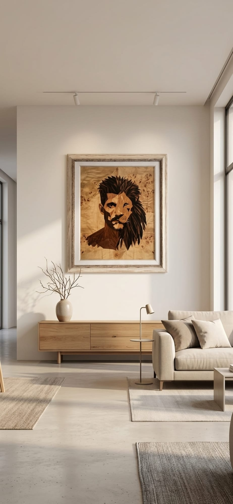

Intarsien richtig pflegen

Eine Intarsie besteht aus natürlichem Holz, ist oberflächenbehandelt und versiegelt — und mit ein wenig Pflege hält sie über Generationen. Holz ist jedoch ein lebendiges Material: Es reagiert auf Licht, Wärme und Luftfeuchtigkeit. Diese wenigen Gewohnheiten erhalten es in bester Verfassung.
1. Achten Sie auf das Licht
Licht wirkt am langsamsten, aber am sichersten auf Holz. Über die Jahre verändert ultraviolettes Licht die Farbe der meisten Holzarten: Manche dunkeln nach und werden wärmer, wie Kirsche; andere hellen auf, wie es Nussbaum tun kann; leuchtende Hölzer werden allmählich bräunlicher. In einer Intarsie, deren Bild vom Kontrast zwischen den Hölzern lebt, sollen diese Veränderungen langsam und gleichmäßig verlaufen.
- Hängen Sie das Werk dort auf, wo niemals direktes Sonnenlicht darauf fällt, auch nicht für eine Stunde am Tag.
- Bevorzugen Sie LED-Beleuchtung, die kaum ultraviolettes Licht oder Wärme abgibt. Halten Sie Bilderleuchten in angemessenem Abstand.
- Ist ein Raum sehr hell, empfiehlt sich eine UV-Schutzfolie an den Fenstern. Sie schützt auch alles andere im Raum.
2. Für ein gleichmäßiges Raumklima sorgen
Holz nimmt Feuchtigkeit aus der Umgebungsluft auf und gibt sie wieder ab; dabei quillt und schwindet es leicht. Plötzliche oder extreme Schwankungen belasten Furnier und Leim.
- Ideal ist eine stabile relative Luftfeuchtigkeit von etwa 40 bis 60 %, wie sie in den meisten Wohnungen ohnehin herrscht.
- Hängen Sie das Werk nicht über einen Heizkörper oder Kamin, neben einen Lüftungsauslass der Klimaanlage oder in Bad oder Küche.
- Innenwände sind besser als kalte Außenwände, hinter dem Rahmen kann es dort feucht werden.
3. Sanft reinigen — und selten
Die Oberfläche ist versiegelt, sie braucht daher sehr wenig.
- Entstauben Sie sie mit einem weichen, trockenen Mikrofasertuch oder einem weichen Pinsel, in Richtung der Maserung.
- Verwenden Sie auf der Oberfläche niemals Wasser, Sprays, Möbelpolitur, Silikonprodukte oder Glasreiniger.
- Wird etwas verschüttet, tupfen Sie es sofort mit einem trockenen Tuch ab; nicht reiben.
4. Sicher aufhängen
Verwenden Sie Haken oder Befestigungen, die für das Gewicht des gerahmten Werks ausgelegt sind, idealerweise zwei Aufhängepunkte statt einem, damit es gerade hängt. Hängen Sie es auf Augenhöhe und möglichst dort, wo das Licht schräg über die Oberfläche fällt: So treten die Maserung und die feinen Texturunterschiede zwischen den Hölzern hervor.

5. Transport und Lagerung
- Bewahren Sie nach Möglichkeit die Originalkiste auf. Sie ist der sicherste Weg, das Werk zu transportieren.
- Tragen Sie das Werk aufrecht, am Rahmen, mit beiden Händen.
- Muss es gelagert werden, wählen Sie einen trockenen Raum mit gleichmäßiger Temperatur, niemals Garage, Dachboden oder Keller, und lagern Sie es aufrecht, nicht flach unter anderen Gegenständen.
Falls etwas passiert
Sollte sich ein Furnierteil lösen, ein Riss entstehen oder die Oberfläche beschädigt werden, kleben oder polieren Sie bitte nicht selbst. Bewahren Sie lose Teile sorgfältig auf und kontaktieren Sie das Atelier: Beschreiben Sie, was passiert ist, senden Sie ein Foto, und wir beraten Sie, wie es richtig restauriert wird.
Mit diesem kleinen Maß an Pflege überdauert ein Intarsienporträt nicht einfach nur. Es reift, wie edles Holz es tut, und wird mit der Zeit schöner.